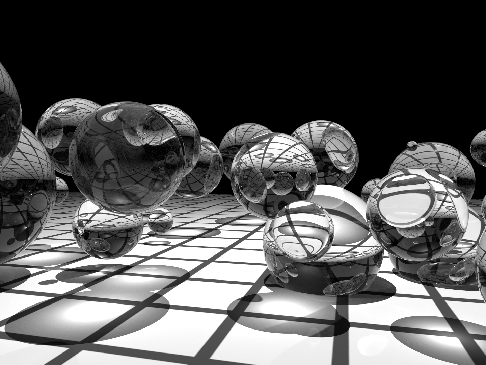

1.2 照片级真实感渲染与光线追踪算法（Photorealistic Rendering and the Ray-Tracing Algorithm）
光真实感渲染的目标是创建一个 3D 场景的图像，使其与同一场景的照片无法区分。在我们描述渲染过程之前，重要的是要理解，在这个上下文中，无法区分 这个词并不精确，因为它涉及到人类观察者，不同的观察者可能会对同一图像有不同的感知。尽管我们将在本书中讨论一些感知问题，但考虑到特定观察者的精确特征是一个困难且尚未完全解决的问题。在大多数情况下，我们将满足于对光的物理特性及其与物质相互作用的准确模拟，依赖我们对显示技术的理解，以向观众呈现最佳图像。
鉴于对光的真实模拟的单一关注，似乎有必要问：光是什么？通过光的感知是我们存在的核心，这个简单的问题自有记录以来就占据了著名哲学家和物理学家的思维。古印度哲学学派维谢什卡（公元前 5-6 世纪）将光视为沿着光线以高速移动的小粒子的集合。在公元前 5 世纪，希腊哲学家恩培多克勒斯假设一种神圣的火焰从人眼中产生，并与来自太阳的光线结合以产生视觉。在 18 世纪和 19 世纪之间，像艾萨克·牛顿、托马斯·杨和奥古斯丁-让·弗涅尔这样的博学者支持了将光建模为波动或粒子传播结果的相互矛盾的理论。在同一时期，安德烈-玛丽·安培、约瑟夫-路易·拉格朗日、卡尔·弗里德里希·高斯和迈克尔·法拉第研究了电与磁之间的关系，最终由詹姆斯·克拉克·麦克斯韦突然而戏剧性地统一为现在称为 电磁学(electromagnetism) 的综合理论。
在这一框架中，光是一种波状表现形式：灯泡灯丝中带电粒子（如电子）的运动会产生对周围 电场(electric field) 的扰动，这种扰动从光源向外传播。电场的振荡还会引起 磁场(magnetic field) 的次级振荡，而磁场的振荡又会强化电场的振荡，依此类推。这两个场的相互作用形成了一种自我传播的波，可以传播极远的距离：例如，夜空中可以看到的遥远恒星，它们的光可以传播数百万光年。在20世纪初，马克斯·普朗克、马克斯·玻恩、埃尔温·薛定谔和维尔纳·海森堡的研究进一步改变了我们的理解：在微观层面上，能量和动量等基本属性是量子化的，这意味着它们只能以某个基数的整数倍存在，这个基数被称为 量子(quantum) 。在电磁振荡的情况下，这个量子被称为 光子(photon) 。从这个意义上说，我们的物理理解走到了一个完整的循环：一旦转向非常小的尺度，光又表现出粒子般的行为，同时依然保持其整体的波动性。
我们的目标是通过模拟光线来生成逼真的图像，那么这个目标在整个过程中如何定位呢？面对这座不断增长的复杂解释之塔，一个根本性的问题出现了：为了实现照片级逼真度，我们需要攀登这座塔多高？幸运的是，答案是“并不需要攀得太高”。组成可见光的波非常小，其波长仅为几百纳米，从波峰到波谷。光的复杂波动行为出现在如此微小的尺度上，但当我们模拟尺度为厘米或米的物体时，这种行为几乎可以忽略不计。这是个好消息，因为在超过几微米的尺度上进行详细的波级模拟是不切实际的：如果要达到这种细节级别，计算机图形学就不可能以现在的形式存在。相反，我们主要使用在16世纪到19世纪初期发展起来的方程，这些方程将光线模型化为沿着射线传播的粒子。这种方法带来了一个更高效的计算方式，即基于一种称为 光线追踪(ray tracing) 的关键操作。
光线追踪在概念上是一个简单的算法；它基于跟踪光线在场景中的路径，随着光线与环境中的物体相互作用和反弹。尽管有许多方法可以编写光线追踪器，但所有这些系统至少模拟以下对象和现象：
- 相机(Cameras)：相机模型决定了场景的观看方式和位置，包括如何在传感器上记录场景的图像。许多渲染系统从相机生成视线，然后追踪到场景中，以确定每个像素处可见的对象。
- 光线与物体的交点(Ray–object intersections)：我们必须能够准确地确定给定光线与给定几何物体的交点。此外，我们需要确定交点处物体的某些属性，例如表面法线或其材质。大多数光线追踪器还具有测试光线与多个物体交点的功能，通常返回沿光线最近的交点。
- 光源(Light sources)：没有照明，渲染场景就没有太大意义。光线追踪器必须模拟场景中光的分布，包括光源本身的位置以及它们如何在空间中分配能量。
- 可见性(Visibility)：为了知道给定光源是否在表面上的某一点上沉积能量，我们必须知道从该点到光源是否存在不间断的路径。幸运的是，在光线追踪器中，这个问题很容易回答，因为我们可以从表面构建光线到光源，找到最近的光线-物体交点，并将交点距离与光源距离进行比较。
- 表面光散射(Light scattering at surfaces)：每个物体必须提供其外观的描述，包括光如何与物体表面相互作用的信息，以及重新辐射（或 散射(scattered) ）光的性质。表面散射模型通常被参数化，以便能够模拟多种外观。
- 间接光传输(Indirect light transport)：因为光可以在反射或穿过其他表面后到达一个表面，通常需要追踪额外的光线以捕捉这一效果。
- 光线传播(Ray propagation)：我们需要了解光沿着光线在空间中传播时发生了什么。如果我们在真空中渲染场景，光能量在光线沿途保持不变。尽管在地球上真正的真空是罕见的，但它们在许多环境中是一个合理的近似。对于通过雾、烟、地球大气等追踪光线，还有更复杂的模型可用。
我们将在本节中简要讨论这些模拟任务中的每一个。在下一节中，我们将展示 pbrt 与底层模拟组件的高级接口，并将介绍一种简单的渲染算法，该算法随机采样光线路径以生成图像。
1.2.1 摄像机和胶片（Cameras and Film）
几乎每个人都使用过相机，并且熟悉其基本功能：你表示希望记录下世界的图像（通常是通过按下按钮或轻触屏幕），图像就会被记录在一张胶片上或由电子传感器捕捉。最简单的拍照设备之一被称为 针孔相机(pinhole camera)。针孔相机由一个密闭的盒子和一端的小孔组成（图 1.2）。当孔被揭开时，光线进入并照射到固定在盒子另一端的摄影纸上。尽管其结构简单，这种相机至今仍被使用，主要用于艺术目的。为了在胶片上形成图像，需要较长的曝光时间以获得足够的光线。
图 1.2：针孔相机。 视景体由通过针孔投影的胶片决定。
尽管大多数相机比针孔相机复杂得多，但它是模拟的一个方便起点。相机最重要的功能是定义将记录到胶片上的场景部分。在图 1.2 中，我们可以看到将针孔连接到胶片边缘如何形成一个延伸到场景中的双锥体。位于这个锥体外的物体无法成像到胶片上。由于实际相机成像的形状比锥体更复杂，我们将可以潜在成像到胶片上的空间区域称为 视景体(viewing volume)。
另一种思考针孔相机的方法是将胶片平面放在针孔前面，但保持相同的距离（图 1.3）。请注意，将孔与胶片连接定义了与之前完全相同的视景体。当然，这并不是构建真实相机的实用方法，但对于模拟目的来说，这是一个方便的抽象。当胶片（或图像）平面位于针孔前面时，针孔通常被称为 眼睛(eye)。
图 1.3： 当我们模拟针孔相机时，我们将胶片放置在成像平面上的孔前，并将孔重新命名为 眼睛。
现在我们来到了渲染中的关键问题：在图像的每个点上，摄像机记录了什么颜色？这个问题的答案部分取决于在该点可见的场景部分。如果我们回想起原始的针孔相机，很明显，只有沿着针孔与胶片上某一点之间的向量传播的光线才能对该胶片位置产生贡献。在我们模拟的相机中，胶片平面位于眼睛前面，我们关注的是从图像点到眼睛的光线量。
因此，摄像机模拟器的一项重要任务是从图像中选取一个点，并生成 光线(rays)，沿着这些光线入射的光将对该图像位置产生贡献。由于光线由一个起点和一个方向向量组成，因此对于图 1.3 中的针孔相机模型，这项任务特别简单：它使用针孔作为起点，从针孔到成像平面的向量作为光线的方向。对于涉及多个镜头的更复杂的相机模型，计算与图像中给定点对应的光线可能会更加复杂。
光沿着光线到达相机时，通常在不同波长下携带不同数量的能量。人类视觉系统将这种波长变化解释为颜色。大多数相机传感器记录与红色、绿色和蓝色对应的三种波长分布的单独测量，这足以重建场景对人类观察者的视觉外观。（第 4.6 节更详细地讨论了颜色。）因此，pbrt 中的相机还包括一种胶片抽象，既存储图像，又模拟胶片传感器对入射光的响应。
pbrt 的相机和胶片抽象在第 5 章中详细描述。图像位置转换为光线的过程被封装在相机模块中，而胶片抽象负责确定传感器对光的响应，渲染系统的其余部分可以专注于沿着这些光线评估光照。
1.2.2 光线与物体的交点（Ray–Object Intersections）
每次相机生成一条光线时，渲染器的第一个任务是确定该光线首先与哪个物体相交（如果有的话）以及相交发生的位置。这个交点是光线上的可见点，我们希望在这个点上模拟光与物体的相互作用。为了找到交点，我们必须测试光线与场景中所有物体的相交情况，并选择光线首先相交的那个物体。给定一条光线 \(\text{r}\) ，我们首先以 参数形式(parametric form) 表示它：
\[ \text{r}(\mathit{t}) = \text{o} + \mathit{t}\mathbf{d} \]
其中 \(\text{o}\) 是光线的起点，\(\mathbf{d}\) 是其方向向量，\(\mathit{t}\) 是一个参数，其合法范围是 \([0, \infty )\) 。我们可以通过指定其参数 \(\mathit{t}\) 值并评估上述方程来获得光线上的一个点。
通常很容易找到射线 \(\text{r}\) 和由隐式函数 \(F(x,y,z) = 0\) 定义的表面之间的交点。我们首先将射线方程代入隐式方程，产生一个新函数，其唯一参数是 \(\mathit{t}\) 。然后我们求解这个函数以得到 \(\mathit{t}\) ，并将最小的正根代入射线方程以找到所需的点。例如，中心在原点、半径为 \( r \) 的球体的隐式方程是
\[ x^2 + y^2 + z^2 - r^2 = 0 \]
替换光线方程，我们得到
\[ (\text{o}_x + t\mathbf{d}_x)^2 + (\text{o}_y + t\mathbf{d}_y)^2 + (\text{o}_z + t\mathbf{d}_z)^2 - r^2 = 0 \]
下标表示点或向量的相应分量。对于给定的光线和给定的球体，除了 \( t \) 以外的所有值都是已知的，这给我们提供了一个在 \( t \) 中容易求解的二次方程。如果没有实根，则光线与球体相交；如果有根，则最小的正根给出交点。
交点本身对于光线追踪器来说信息不足；它需要知道该点表面的某些属性。首先，必须确定该点材质的表示并传递给光线追踪算法的后续阶段。其次，还需要关于交点的额外几何信息，以便对该点进行着色。例如，表面法线 \( \mathbf{n} \) 始终是必需的。尽管许多光线追踪器仅使用 \( \mathbf{n} \) ，但更复杂的渲染系统如 pbrt 需要更多的信息，例如关于表面局部参数化的各种位置和表面法线的偏导数。
图 1.4： 莫阿娜岛(Moana Island) 场景，由 pbrt 渲染。该模型来自一部动画电影，展示了为电影渲染场景的极端复杂性（华特迪士尼动画工作室 2018）。它包含超过 1.46 亿个独特三角形，但由于广泛使用对象实例化，场景的真实几何复杂性实际上达到了数百亿个三角形。（场景由华特迪士尼动画工作室提供(Scene courtesy of Walt Disney Animation Studios)。）
当然，大多数场景由多个对象组成。暴力方法是依次测试每个对象的光线，选择所有交点中最小的正 \( t \) 值以找到最近的交点。这种方法虽然正确，但速度非常慢，即使对于复杂度适中的场景也是如此。更好的方法是结合 加速结构(acceleration structure) ，在光线交点过程中快速排除整组对象。这种快速剔除无关几何体的能力意味着光线追踪通常在 \( O(m \log n) \) 时间内运行，其中 \( m \) 是图像中的像素数量，\( n \) 是场景中的对象数量。†（构建加速结构本身的时间至少是 O(n)。）得益于加速结构的有效性，可以在合理的时间内渲染出如图 1.4 所示的高度复杂场景。
pbrt 的几何接口及其对各种形状的实现描述在第 6 章中，加速接口及其实现则在第 7 章中展示。
1.2.3 光分布（Light Distribution）
光线与物体交点阶段为我们提供了一个需要着色的点以及该点的局部几何信息。请记住，我们的最终目标是找到从这个点朝向相机离开的光线量。为此，我们需要知道 到达(arriving) 该点的光线量。这涉及到场景中光线的 几何分布(geometric distribution ) 和 辐射分布(radiometric distribution ) 。对于非常简单的光源（例如，点光源），光照的几何分布仅仅是知道光源的位置。然而，现实世界中并不存在点光源，因此基于物理的光照通常基于 面(area) 光源。这意味着光源与一个几何物体相关联，该物体从其表面发出光照。然而，在本节中，我们将使用点光源来说明光分布的组成部分；光测量和分布的更严格讨论将在第 4 章和第 12 章中进行。
我们经常想知道在交点 \( \text{p} \) 周围的微分区域上沉积的光功率（图 1.5）。我们将假设点光源具有某个功率 \( \Phi \) ，并且它在所有方向上均匀辐射光。这意味着围绕光源的单位球面上的功率每单位面积为 \( \Phi/(4\pi) \) 。（这些测量将在第 4.1 节中进行解释和形式化。）
图 1.5： 用于确定由点光源到达点 \( \text{p} \) 的单位面积功率的几何构造。点到光源的距离用 \( r \) 表示。
如果我们考虑两个这样的球体（图 1.6），显然在较大球体上的某一点的单位面积功率必须小于在较小球体上的某一点的功率，因为相同的总功率分布在更大的面积上。具体来说，半径为 \( r \) 的球体上某一点到达的单位面积功率与 \( 1/r^2 \) 成正比。
图 1.6： 由于点光源在所有方向上均匀辐射光，因此相同的总功率会沉积在以光源为中心的所有球体上。
此外，可以证明，如果微小的表面 \( \text{d}A \) 以角度 \( \theta \) 倾斜，远离从表面点到光源的向量，则沉积在 \( \text{d}A \) 上的功率量与 \( \cos\theta \) 成正比。将这一切结合起来，单位面积的微分功率 \( \text{d}E \)（微分辐照度(differential irradiance)）是
\[ \text{d}E = \frac{\Phi \cos \theta}{4 \pi r^2} \]
读者如果对计算机图形学中的基本光照已经熟悉，将会注意到这个方程中编码的两个熟悉的定律：上述提到的倾斜表面的余弦衰减，以及光随距离平方的倒数(one-over-\(r\)-squared)衰减。
图 1.7： 具有数千个光源的场景。这个场景的光源数量过多，无法在每个计算反射光的点上考虑所有光源。然而，可以通过对光源进行随机采样来高效渲染。 （场景由 Beeple 提供(Scene courtesy of Beeple)。）
多个光源的场景容易处理，因为光照是 线性(linear) 的：每个光源的贡献可以单独计算并相加以获得整体贡献。光的线性特性意味着可以应用复杂的算法在场景中每个着色点仅从部分光源随机采样光照；这是第 12.6 节的主题。图 1.7 显示了以这种方式渲染的具有数千个光源的场景。
1.2.4 可见性（Visibility）
前一节中描述的光照分布忽略了一个非常重要的组成部分：阴影(shadows)。只有当从点到光源位置的路径没有障碍时，每个光源才会对被着色的点提供照明（图 1.8）。
图 1.8： 只有当光源在接收点的视线中没有被遮挡时，光源才会将能量沉积在表面上。左侧的光源照亮了点 \( \text{p} \) ，而右侧的光源则没有。
幸运的是，在光线追踪器中，很容易确定从被着色的点是否能看到光源。我们只需构造一条新的光线，其起点位于表面点，方向指向光源。这些特殊的光线称为 阴影光线(shadow rays) 。如果我们在环境中追踪这条光线，我们可以通过比较任何找到的交点的参数 \( t \) 值与光源位置沿光线的参数 \( t \) 值，检查光线的起点与光源之间是否存在交点。如果光源与表面之间没有阻挡物，则光的贡献将被包含在内。
1.2.5 表面光散射（Light Scattering at Surfaces）
我们现在能够计算出两个对点进行正确着色至关重要的信息：其位置和入射光照。现在我们需要确定入射光在表面上的 散射(scattered) 情况。具体来说，我们对沿着我们最初追踪以找到交点的光线散射回来的光能量感兴趣，因为那条光线通向相机（图 1.9）。
图 1.9： 表面散射的几何表示。沿着方向 \( \omega_i \) 到达的入射光在点 \( \text{p} \) 与表面相互作用，并沿着方向 \( \omega_o \) 向相机散射回去。散射到相机的光量由入射光能量与 BRDF 的乘积给出。
场景中的每个物体提供了一种 材质(material) ，这是一种对其表面每个点外观属性的描述。这个描述由 双向反射分布函数(bidirectional reflectance distribution function)（BRDF）给出。该函数告诉我们从入射方向 \( \omega_i \) 反射到出射方向 \( \omega_o \) 的能量有多少。我们将 BRDF 在 \( \text{p} \) 处表示为 \( f_r(\text{p},\omega_o,\omega_i) \) 。（根据约定，方向 \( \omega \) 是单位向量。）
图 1.10： 使用 BSSRDF 模拟的散射模型头部。准确建模次表面光传输，而不是假设光在进入的同一点退出，极大地提高了渲染图像的真实感。（模型由 Infinite Realities, Inc. 提供(Model courtesy of Infinite Realities, Inc)）
将 BRDF 的概念推广到透射光（获得 BTDF）或从表面任一侧到达的光的普遍散射是很容易的。描述一般散射的函数称为 双向散射分布函数(bidirectional scattering distribution function)（BSDF）。 pbrt 支持多种 BSDF 模型；它们在第 9 章中进行了描述。更复杂的是 双向散射表面反射分布函数(bidirectional scattering surface reflectance distribution function)（BSSRDF），它模拟光在不同于入射点的表面上退出。这对于再现如牛奶、大理石或皮肤等半透明材料是必要的。BSSRDF 在图 1.10 中进行了描述，显示了基于人头模型的 pbrt 渲染的图像，其中皮肤的散射使用 BSSRDF 进行建模。
1.2.6 间接光传输（Indirect Light Transport）
特纳·惠特德（Turner Whitted）在 1980 年发表的关于光线追踪的原始论文强调了其 递归(recursive) 特性，这一特性使得在渲染图像中包含间接*镜面反射(specular reflection)和透射(transmission )*成为可能。例如，如果从相机发出的光线击中一个像镜子一样的光滑物体，我们可以在交点处关于表面法线反射光线，并递归调用光线追踪例程以找到到达镜子上该点的光线，将其贡献添加到原始相机光线中。相同的技术也可以用于追踪与透明物体相交的透射光线。许多早期的光线追踪示例展示了镜子和玻璃球（图 1.11），因为这些类型的效果很难通过其他渲染技术捕捉。
(a) 惠特光线追踪 (Whitted ray tracing)
(b) 随机渐进光子映射 (Stochastic progressive photon mapping)
图 1.11： 早期光线追踪场景原型。注意镜面和玻璃物体的使用，这突显了算法处理这些表面的能力。(a) 使用 Whitted 1980 年的原始光线追踪算法渲染，(b) 使用 随机渐进光子映射(stochastic progressive photon mapping) (SPPM) 渲染，这是一种现代先进的光传输算法，将在第 sec:photon-mapping 节中介绍。SPPM 能够准确模拟通过球体的光的聚焦。
一般来说，从物体上的一个点到达相机的光量是由物体发出的光（如果它本身是光源）和反射光的总和给出的。这个想法通过 光传输方程(light transport equation)（通常也称为 渲染方程(rendering equation) ）形式化，该方程根据 辐射度(radiance) 来测量光，辐射度是一个将在第 4.1 节中定义的辐射单位。它表示从点 \( \text{p} \) 在方向 \( \omega_o \) 上发出的辐射度 \( L_o(\text{p},\omega_o) \) 等于该点在该方向上的发射辐射度 \( L_e(\text{p},\omega_o) \) ，加上来自围绕球体 \( \text{S}^2 \) 上点 \( \text{p} \) 所有方向的入射辐射度，再乘以 BSDF \( f(\text{p},\omega_o,\omega_i) \) 和一个余弦项：
(1.1) \[ L_o(\text{p},\omega_o) = L_e(\text{p},\omega_o) + \int_{\text{S}^2} f(\text{p},\omega_o,\omega_i) L_i(\text{p},\omega_i) |\cos\theta_i| \text{d}\omega_i \]
我们将在第 4.3.1 节和第 13.1.1 节中展示该方程的更完整推导。除了最简单的场景外，解析地求解这个积分是不可能的，因此我们必须做出简化假设或使用数值积分技术。
Whitted 的光线追踪算法通过忽略来自大多数方向的入射光，简化了这个积分，仅对光源方向以及完美反射和折射的方向进行评估 \( L_i(\text{p},\omega_i) \) 。换句话说，它将积分转化为对少数方向的求和。在 1.3.6 节中，我们将看到简单的随机采样方程（1.1）可以创建包含复杂照明和复杂表面散射效果的真实图像。在本书的其余部分，我们将展示如何使用更复杂的随机采样算法大大提高这种通用方法的效率。
1.2.7 光线传播（Ray Propagation）
图 1.12： 使用参与介质建模的爆炸。因为 pbrt 能够在参与介质的详细模型中模拟光的发射、散射和吸收，因此能够渲染出像这样的图像。（场景由 Jim Price 提供(Scene courtesy of Jim Price)。）
到目前为止的讨论都假设光线在真空中传播。例如，在描述点光源的光分布时，我们假设光的能量在以光源为中心的球面上均匀分布，而在传播过程中没有减弱。烟雾、雾气或灰尘等 参与介质(participating media) 的存在可能会使这一假设失效。这些效应在模拟中非常重要：可以使用参与介质描述一大类有趣的现象。图 1.12 显示了由 pbrt 渲染的爆炸。更不戏剧性的是，几乎所有户外场景都受到参与介质的显著影响。例如，地球的大气使得远处的物体看起来饱和度较低。
参与介质可以通过两种方式影响沿光线传播的光。首先，介质可以 熄灭(extinguish)（或 衰减(attenuate) ）光，或者通过吸收光，或者通过将光散射到不同的方向。我们可以通过计算光线起点与交点之间的 透射率(transmittance) \( T_r \) 来捕捉这种效果。透射率告诉我们在交点散射的光有多少能够返回到光线起点。
参与介质也可以沿着光线增加光的强度。这可以发生在介质发出光（如火焰）或介质将来自其他方向的光散射回光线时。我们可以通过对 体积光传输方程(volume light transport equation) 进行数值计算来找到这个量，方法与我们通过计算光传输方程以找到从表面反射的光的数量相同。我们将把参与介质和体积渲染的描述留到第 11 章和第 14 章。